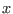

Next: The internal pressure-gradient Up: The mean flow model Previous: The V-momentum equation Contents
INTERFACE:
subroutine extpressure(method,nlev)DESCRIPTION:
This subroutine calculates the external pressure-gradient. Two methods are implemented here, relating either to the velocity vector at a given height above bed prescribed or to the vector for the vertical mean velocity. In the first case, dpdx and dpdy are - and -components of the prescribed velocity vector at the height h_press above the bed. The velocity profile will in this routive be shifted by a vertically constant vector such that the resulting profile has an (interpolated) velocity at h_press which is identical to the prescribed value. In the second case, dpdx and dpdy are - and -components of the prescribed vertical mean velocity vector, and h_press is not used. Here the velocity profile is shifted in such a way that the resulting mean velocty vector is identical to dpdx and dpdy.
For both cases, this is a recalculation of the external pressure gradient, since at all points the same acceleration has been applied in this operator split method.
If the external pressure-gradient is prescribed by the surface slope, then it is directly inserted in (12) and (14).
For details of this method, see Burchard (1999).
USES:
use meanflow, only: u,v,h use observations, only: dpdx,dpdy,h_press IMPLICIT NONEINPUT PARAMETERS:
method to compute external pressure gradient integer, intent(in) :: method number of vertical layers integer, intent(in) :: nlevREVISION HISTORY:
Original author(s): Hans Burchard & Karsten Bolding